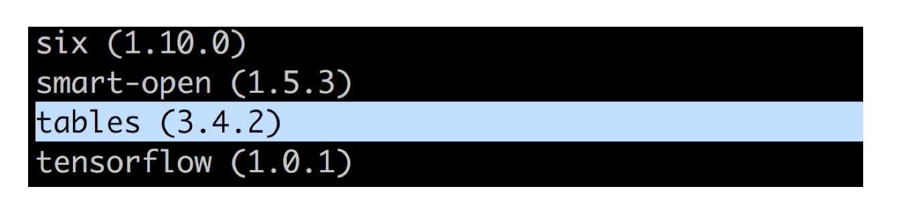

文件读取与存储
学习目标
- 目标
- 了解Pandas的几种文件读取存储操作
- 应用CSV方式和HDF方式实现文件的读取和存储
- 应用
- 实现股票数据的读取存储
我们的数据大部分存在于文件当中，所以pandas会支持复杂的IO操作，pandas的API支持众多的文件格式，如CSV、SQL、XLS、JSON、HDF5。
注：最常用的HDF5和CSV文件
1、数据读取存储API

1.1 read_csv与to_csv
- pandas.read_csv(filepath_or_buffer, sep =',' , delimiter = None)
- filepath_or_buffer:文件路径
- usecols:指定读取的列名，列表形式
- DataFrame.to_csv(path_or_buf=None, sep=', ’, columns=None, header=True, index=True, index_label=None, mode='w', encoding=None)
- path_or_buf :string or file handle, default None
- sep :character, default ‘,’
- columns :sequence, optional
- mode:'w'：重写, 'a' 追加
- index:是否写进行索引
- header :boolean or list of string, default True,是否写进列索引值
# 读取文件
data = pd.read_csv("./data/stock_day/stock_day.csv", usecols=['open', 'close'])
data[:10].to_csv("./test.csv", columns=['open'], index=False, mode='a', header=False)
1.2、read_hdf与to_hdf
pandas.read_hdf(path_or_buf，key =None，** kwargs)
从h5文件当中读取数据
- path_or_buffer:文件路径
- key:读取的键
- mode:打开文件的模式
- return:Theselected object
close = pd.read_hdf("./data/stock_plot/day_close.h5")
a = close[['000001.SZ', '000002.SZ']]
a.to_hdf("./test.h5", key="x")
b = pd.read_hdf("./test.h5", key="x")
如果读取的时候出现以下错误

需要安装安装tables模块避免不能读取hdf文件
pip install tables

拓展
优先选择使用hdf文件存储
- hdf在存储的是支持压缩，使用的方式是blosc，这个是速度最快的也是pandas默认支持的
- 使用压缩可以提磁盘利用率，节省空间
- hdf还是跨平台的，可以轻松迁移到hadoop 上面